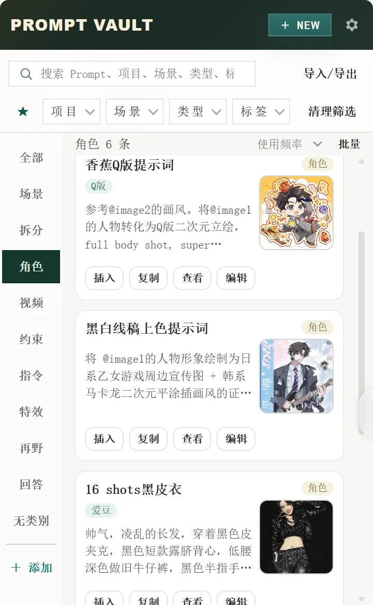

保存与整理
收集图像创作、角色设计、视频控制、约束模块和任务指令等 Prompt。
让每一个 Prompt，都有自己的位置
收集、分类、预览，并在需要时快速复用。专为创作者打造的提示词管理工具。
当前版本 1.1.71 · Google Chrome、豆包浏览器与 Microsoft Edge 均可从对应商店安装


主要功能
收集图像创作、角色设计、视频控制、约束模块和任务指令等 Prompt。
通过项目、场景、类型和标签管理内容，在不同创作任务之间快速切换。
把参考图与提示词保存在一起，使用时无需重新寻找对应素材。
支持 JSON 导入导出，也可以只导出当前筛选结果，便于备份和迁移。
API 配置教程
第一次设置也可以跟着完成
API Key 可以理解为服务商发给你的专用访问凭证。Prompt Vault 用它连接你选择的 AI 服务；Key 需要由你本人在对应服务商处申请。
Gemini API 目前有免费层，但只适用于部分模型并受额度限制；需要更高额度时可以为项目启用付费。免费额度、价格和可用模型可能调整，请以 Gemini 官方价格页和 计费说明为准。
页面打不开：请把科学上网／网络代理节点切换到美国，再重新打开 Gemini API 页面。如果仍无法创建 Key，通常需要检查当前 Google 账号、项目权限或所在地区是否可用。
DeepSeek API 按实际用量计费，费用从充值余额或服务商发放的余额中扣除；不能把赠送余额当作长期免费保证。具体单价以 DeepSeek 官方价格页为准。
报错怎么看：401 通常表示 Key 错误、失效或已撤销；402 表示余额不足，需要在 DeepSeek 平台充值或等待可用余额；429 表示请求过快，请稍后再试。
Groq 目前提供受速率和用量限制的免费层；需要更高限制时，可添加付款方式升级到按量计费的 Developer 层。免费限制和付费规则可能变化，请查看 Groq 官方计费说明。
OpenAI API 与 ChatGPT 是两套独立的计费系统。即使已经订阅 ChatGPT Plus／Pro，也不代表 API 已有额度；API 通常需要在 OpenAI Platform 单独设置付款方式或购买额度。请查看 OpenAI 官方计费说明。
自定义兼容接口没有统一的免费或付费规则，费用、额度、退款和模型可用性都由你实际选择的服务商决定。使用前请先阅读该服务商自己的价格与隐私说明。
endpoint（API 地址）、model（模型名称）和 key（API Key）。三项必须来自同一家服务商，不能混用。这里没有一个适用于所有兼容接口的申请链接。若服务商只给了聊天网址，没有提供 API 文档、endpoint、model 和 key，就不能直接当作兼容接口使用。
适用人群
安装
Google Chrome 与豆包浏览器请从 Chrome 网上应用店安装；Microsoft Edge 请从 Edge 加载项商店安装。